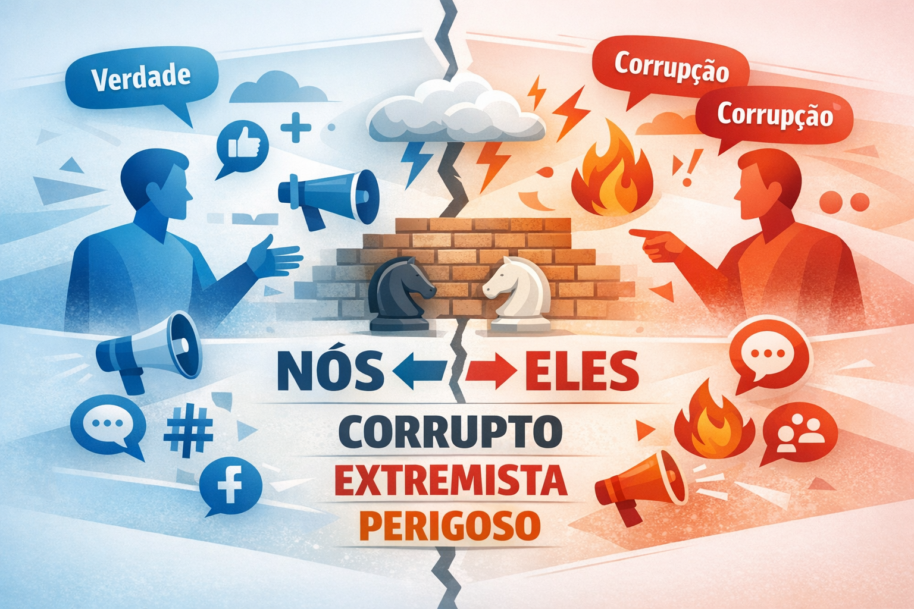

A construção discursiva do "inimigo" na política brasileira: metáforas, adjetivos e polarização
A política brasileira contemporânea tem sido marcada por um processo intensificado de polarização discursiva, no qual a construção simbólica do “inimigo” desempenha papel central. Esse fenômeno não é recente, mas ganha novas configurações com o avanço das redes sociais e a ampliação do alcance dos discursos políticos. Nesse contexto, o uso estratégico de metáforas, adjetivos e enquadramentos linguísticos contribui para a criação de identidades antagônicas, reforçando divisões sociais e ideológicas.

A análise discursiva desse processo encontra respaldo teórico em autores como Teun A. van Dijk, que destaca o papel da linguagem na reprodução de ideologias e na construção de representações sociais. Segundo o autor, discursos políticos frequentemente operam por meio de uma polarização entre “nós” e “eles”, em que o grupo de pertencimento é valorizado, enquanto o outro é negativamente representado (van Dijk, 2006).
Polarização e construção do “outro”
A construção discursiva do inimigo está diretamente ligada à necessidade de consolidação de identidades políticas. Ao definir um “outro” como ameaça, corrupto, incompetente ou perigoso, cria-se uma narrativa que legitima ações, mobiliza eleitores e fortalece vínculos dentro do grupo. Nesse sentido, a linguagem não apenas descreve a realidade, mas a constrói.
De acordo com Charaudeau (2015), o discurso político se organiza em torno de estratégias de persuasão que visam influenciar a opinião pública. Uma dessas estratégias consiste na dramatização do cenário político, frequentemente associada à criação de figuras antagonistas.
“O discurso político constrói uma cena dramática na qual se opõem forças contraditórias, frequentemente simplificadas em termos maniqueístas, a fim de facilitar a adesão do público a uma determinada posição ideológica.” (CHARAUDEAU, 2015, p. 87)
O papel das metáforas no discurso político
As metáforas desempenham papel fundamental na construção do inimigo político, pois permitem traduzir conceitos abstratos em imagens concretas e emocionalmente carregadas. Lakoff e Johnson (2002) argumentam que as metáforas estruturam o pensamento humano, influenciando a forma como percebemos o mundo.
No contexto político brasileiro, é comum o uso de metáforas bélicas, como “guerra contra a corrupção”, “combate ao inimigo” ou “batalha ideológica”. Tais expressões contribuem para a intensificação do conflito simbólico, transformando adversários em inimigos a serem derrotados.
“As metáforas não são apenas ornamentos linguísticos, mas instrumentos cognitivos que moldam a percepção e a ação, especialmente em contextos de disputa política.” (LAKOFF; JOHNSON, 2002, p. 45)
Além das metáforas de guerra, também são frequentes metáforas que associam o adversário a doenças (“câncer político”), sujeira (“corrupção que contamina”) ou ameaça moral (“destruição da família”). Essas construções reforçam a ideia de que o “outro” precisa ser eliminado ou combatido.
Adjetivação e julgamento moral
Outro recurso central na construção do inimigo é o uso de adjetivos com forte carga valorativa. Termos como “corrupto”, “incompetente”, “radical”, “extremista” ou “antipatriota” são frequentemente empregados para desqualificar o adversário e simplificar o debate político.
Segundo Fairclough (2001), a escolha lexical em um discurso nunca é neutra, pois reflete posições ideológicas e relações de poder. A adjetivação, nesse sentido, funciona como um mecanismo de avaliação que orienta a interpretação do público.
“A linguagem é um espaço de luta simbólica, onde diferentes grupos disputam a definição da realidade por meio de escolhas lexicais e estratégias discursivas.” (FAIRCLOUGH, 2001, p. 92)
Na política brasileira, observa-se uma tendência à intensificação desses adjetivos, muitas vezes acompanhados de hipérboles e generalizações. Isso contribui para a desumanização do adversário e para a redução da complexidade dos debates.
Impactos da polarização discursiva
A construção do inimigo político por meio da linguagem tem impactos significativos na democracia. Ao reforçar divisões e promover visões simplificadas da realidade, esse tipo de discurso dificulta o diálogo, compromete a deliberação pública e pode levar à radicalização.
Além disso, a disseminação desses discursos nas redes sociais amplia seu alcance e intensifica seus efeitos, criando bolhas informacionais e reforçando crenças pré-existentes. Como observa Sunstein (2017), a polarização tende a aumentar quando indivíduos são expostos apenas a opiniões semelhantes às suas.
Portanto, compreender os mecanismos linguísticos envolvidos na construção do inimigo político é fundamental para o fortalecimento de uma cultura democrática baseada no diálogo, na pluralidade e no respeito às diferenças.
Considerações finais
A análise da construção discursiva do “inimigo” na política brasileira revela o papel central da linguagem na formação de percepções e na organização do campo político. Metáforas e adjetivos não são meros recursos estilísticos, mas instrumentos poderosos de persuasão e mobilização.
Diante desse cenário, torna-se essencial desenvolver uma leitura crítica dos discursos políticos, capaz de identificar estratégias de manipulação e promover uma participação mais consciente no debate público.
Referências
- CHARAUDEAU, Patrick. Discurso político. São Paulo: Contexto, 2015.
- FAIRCLOUGH, Norman. Discurso e mudança social. Brasília: Editora UnB, 2001.
- LAKOFF, George; JOHNSON, Mark. Metáforas da vida cotidiana. Campinas: Mercado de Letras, 2002.
- SUNSTEIN, Cass R. #Republic: Divided Democracy in the Age of Social Media. Princeton: Princeton University Press, 2017.
- VAN DIJK, Teun A. Discurso e poder. São Paulo: Contexto, 2006.